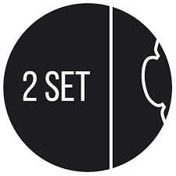

Um. A life? Not really. I read a bit on and off, mostly fantasy (mystery is also very good). I am currently reading Flowers for Algernon, but it's also been about two months (I have no excuse, it's only like 300 pages).
I also (occasionally, sometimes, been a while) do photography, but I cannot edit photos for the life of me. I am, however, the kind of person to take a picture of the moon at any given time, any given phase (except new moon, obviously). I love it so much. Same with stars, though it's a lot less common as the days grow longer.
I do play violin. I have played for a while now. I am still bad at it. I've been in orchestra for 4 years, and it is a lot more interesting to play in (partly because the audience won't know if I mess up, but ahem). But speaking of music - would you happen to remember Ivanka? I am not nearly as obsessed, but TwoSet Violin is still AMAAAZING. It's a YouTube channel of a duo of classical violinists (Brett Yang and Eddy Chen) who make videos for comedy about classical music.
My music taste fluctuates a lot and goes through many different phases, so there's not a particular artist that I would listen to at any time. Currently, I've been listening to more J-pop, so Vaundy, Rokudenashi, King Gnu, etc.
Other things that interest me include sleeping, because even though the fact that my sleep schedule is completely skewed is entirely my fault, I am tired and sleeping helps me avoid whatever I actually have to do. I can allegedly be found adding pins to a certain Pinterest board at 2 in the morning.